Past Projects
2009
- Designed and implemented IFRS System in Java, EJB, X-Internet on WAS (web application server) middleware at Busan Bank (*IFRS - International Financial Reporting Standards)
Project: Busan Bank IFRS System Integration
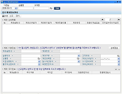
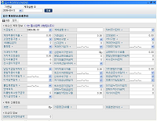
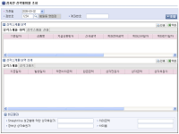
- Designed and implemented very large scale banking system in Java on IBM Tuxedo and Oracle WebLogic middleware at Shinhan Bank
Project: Shinhan Bank Global IT System Link
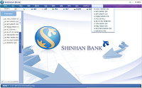
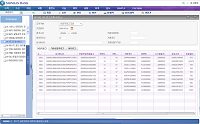
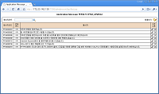
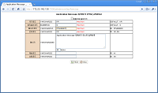
2008
- Designed and implemented credit and finance system in Java and C on WAS middleware at KIS Credit Service (Moody's
Investors Service Joint Venture Company)
Project: KIS Co.’s The Next Generation System Integration Link
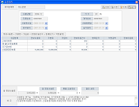
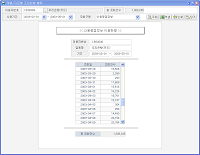
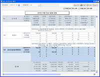
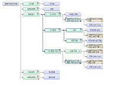
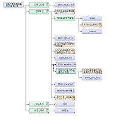
2007
- Developed the web-based software in Java and J2EE on Oracle WebLogic middleware at the Ministry of Commerce,
Industry and Energy
Project: Electronic Trade Building Project Link
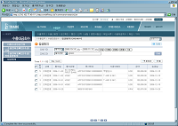
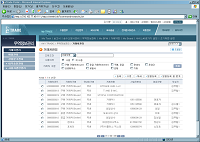
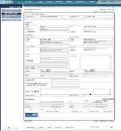
2006
- Researched and developed VoIP phone application with H323/SIP protocol (web-based)
- Developed Win32/MFC software for company automation and document classification
- Developed IPBLOCK IP Module at Serome (Korean)
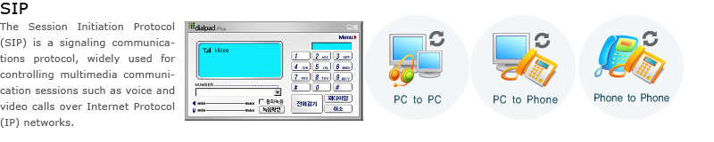
2001 ~ 2006
- Coded and launched Samsung Electronic Global Web Portal System in Java, J2EE on WebLogic and Oracle DB
- Coded and launched The Korea National Police Agency Portal System in Java, J2EE Link
- HCI Research: Usability For MP3 Player iPod and iRiver
PDF: download
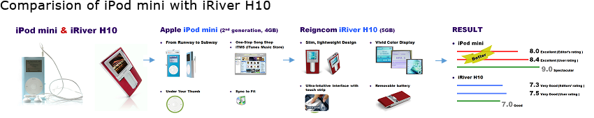
- OpenSSL: Coin Flipping by Telephone of Information Security
Source Code: client, server, createKey (.c)
- Microprocess 8051 (Microcomputer): Dot Matirx Program
Source Code: download (.asm)
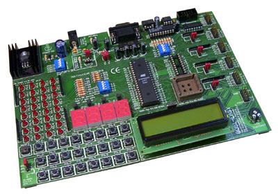
- Line Editor using UNiX System Call
Source Code: download (.c)
- Mobile Line Communication (WIPI: Wireles Internet Platform for Interoperability)
Skill set: ASP, DBMS, XML, AnyBuilder, IIS
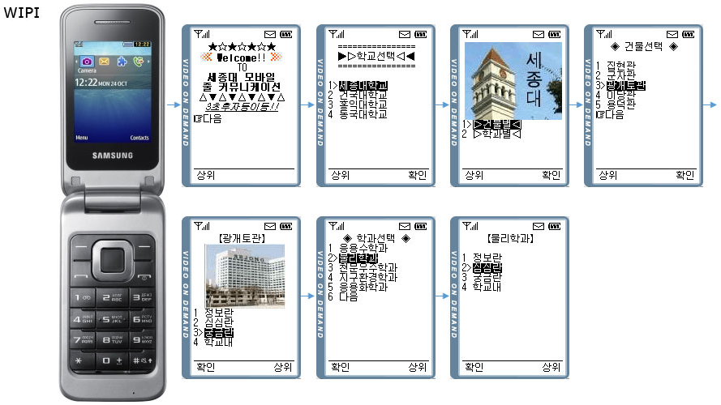